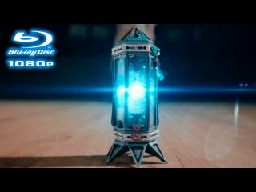
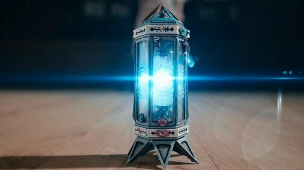

Весь 1-й сезон (8 серий)
 | Весь 1-й сезон (8 серий) |
The Metaphysical Engine, or What Quill Did
Дата выхода: 26 ноября 2016
Формат: 45-минутный эпизод
| Варианты озвучек: | * Разные: смотрите по инструкции |
|---|---|
| Скачивание и просмотр: |
Заперев ребят в классе и убрав их тем самым с пути, мисс Квилл принимает неожиданное предложение Дороти помочь ей избавиться от арна в своей голове и вновь обрести свободу. В сопровождении пленного перевёртыша Баллона мисс Квилл с помощью метафизического двигателя отправляется в путешествие по невероятным, невиданным и опасным мирам, собирая ингредиенты для операции, которая изменит её жизнь. После волнующей встречи с хирургом и едва не окончившейся летальным исходом процедуры, преображённой и готовой к войне мисс Квилл предстоит найти способ вернуться обратно на Землю.
